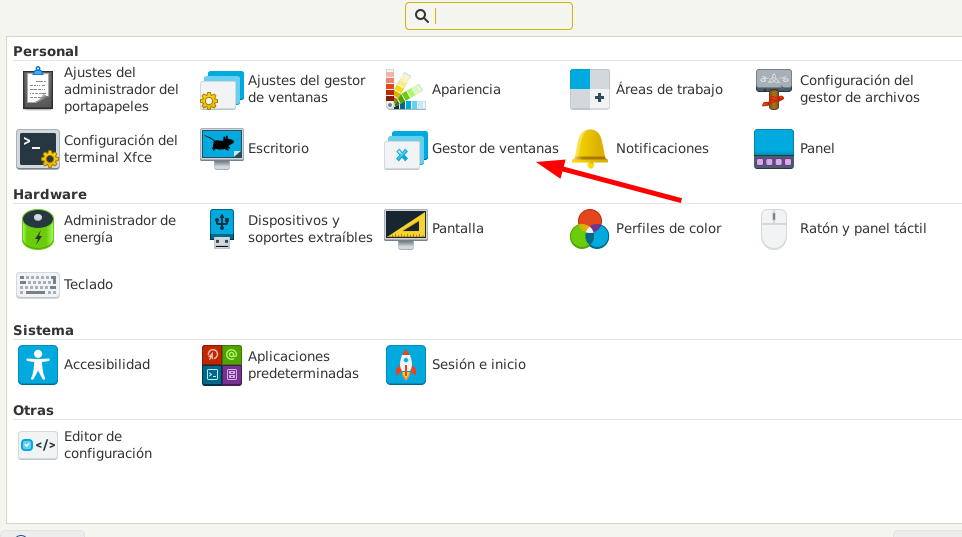
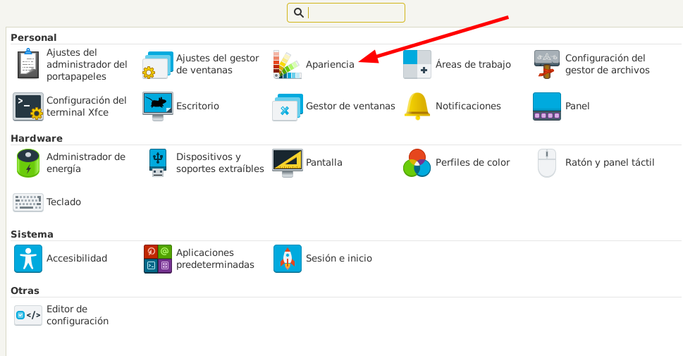

Instalar y configurar XFCE.
Para instalar el entorno de escritorio de xfce lo hacemos con el siguiente comando
apt-get install xfce4
A mayores podemos instalar el siguiente paquete para tener las extensiones que mas se suelen utilizar para xfce (gestor de energia, notificaciones...etc):
apt-get install xfce4-goodies
Los themes se instalan en las mismas carpetas que en gnome:
Themes GnomeEn XFCE podemos tener dos tipos de themes los de xfce/xfwm4 o los de GTK
XFCE LookLos de xfce/xfwm4 se configuran desde Configuracion > Gestor de Ventanas:
Los de GTK se configurar desde Configuracion > Apariencia:
Por defecto en XFCE el archivo .profile de la carpeta personal no se lee.
Para hacer que se lea tenemos que crear el archivo .xsessionrc con el siguiente contenido:
. /etc/profile
. ~/.profilePor defecto el display manager de lightdm no muestra un listado de usuario, tenemos que escribir manualmente el nombre del usuario para hacer login
Para modificar este comportamiento editamos el archivo /etc/lightdm/lightdm.conf y modificar la siguiente linea:
[Seat:*]
-
-
-
greeter-hide-users=false
Para utilizar kdeconnect podemos instalarlo con los siguientes comandos para tener integración con nautilus:
apt-get install kdeconnect
apt-get install nautilus-kdeconnect
Para ejecutar la aplicación y emparejar dispositivos lo hacemos con el siguiente comando
kdeconnect-app
Al tener un dispositivo emparejado desde el explorador de nautilus al hacer click derecho en un archivo nos debería de aparecer la opción de "Enviar a dispositivo"
Al cambiar a XFCE tuve un pequeño problema de rendimiento (las apps tardaban 1 segundo mas de los normal en abrirse), en mi caso esto se debía al paquete de iconos que tenia instalado (Papirus), al cambiar de paquete de iconos los problemas desaparecieron.
Debian | XFCE